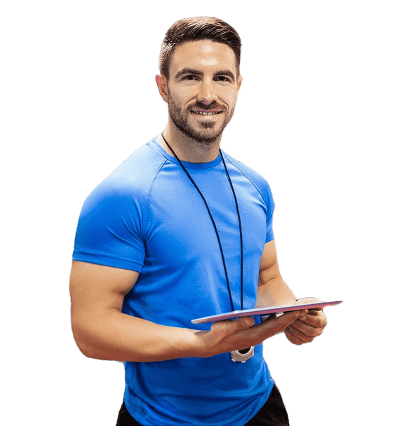

Fabio Villotti

- Boxe
- Calisthenics
- Cross Active Induction
- HIIT
Possiedo un diploma da Personal Trainer ISSA e certificazioni ELAV, Taping Neuromuscolare, TRX e Kettlebell. So fare massaggi drenanti, muscolari e distensivi. Ho esperienza come istruttore di sala pesi, corsi musicali, attività motorie e scuola calcio. Insieme possiamo raggiungere grandi risultati in dimagrimento, divertimento, massa e tonificazione.
- Principianti
- Forza e resistenza
- Ipertrofia
- Dimagrimento e tonificazione
- Divertimento